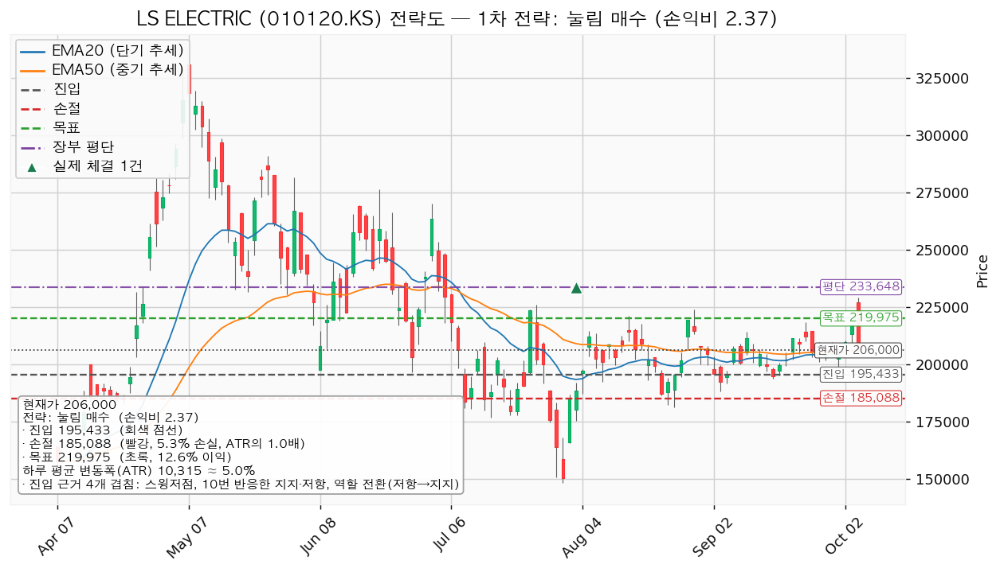
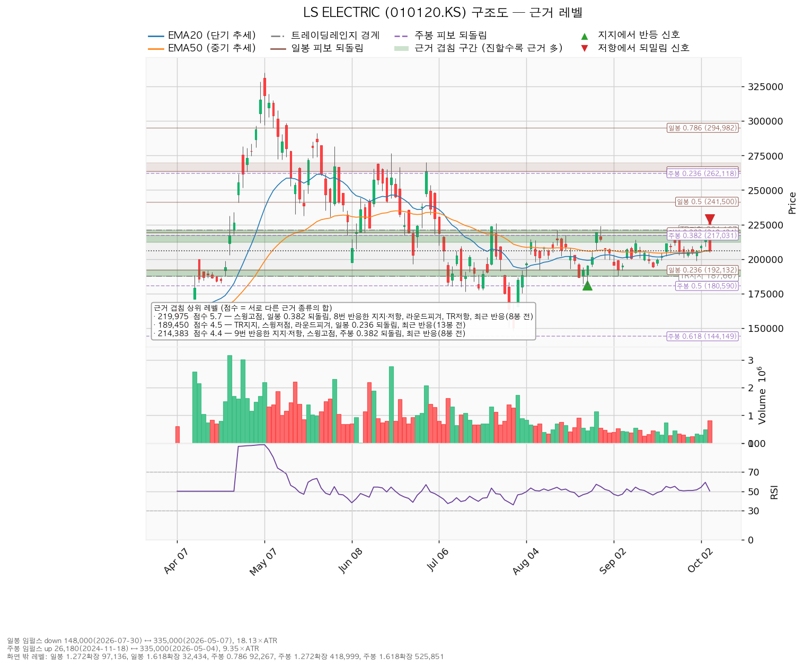
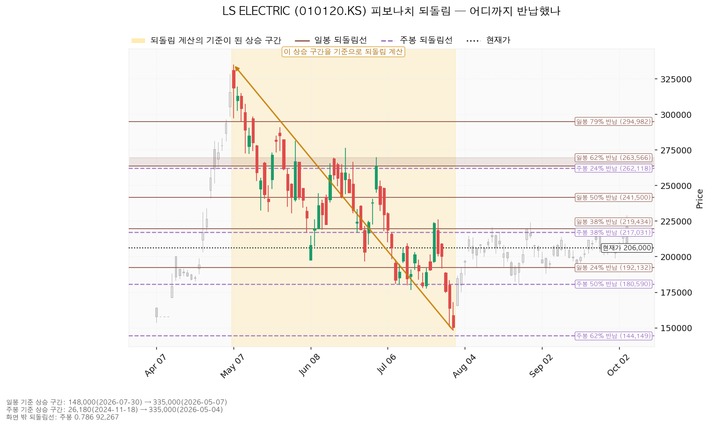
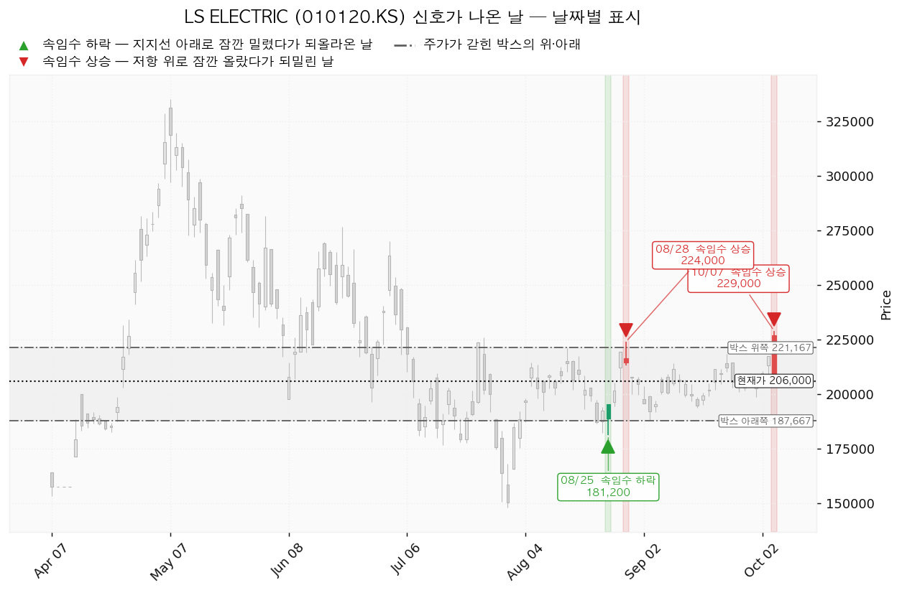

LS ELECTRIC(010120.KS)은 배전반·차단기·변압기 같은 전력기기와 전력 계통 자동화 설비를 만드는 한국 기업이며, 데이터센터·산업 설비용 전력 인프라와 해외 수출 비중이 큽니다.
| 구분 | 가격 | 판정 방식 | 현재가 206,000원 대비 | 상태 |
|---|---|---|---|---|
| 진입선(눌림 매수) | 195,433원 | 장중 저가로 닿으면 지정가 매수 | -5.13% (1.02 ATR) | 대기 |
| 집행 손절 | 185,088원 | 장중 저가 터치 — 진입한 경우에만 유효(미진입이면 의미 없음) | -10.15% (2.03 ATR) | 미진입 |
| 관망 종료 기준 | 2026-10-22 실적 | 날짜 — 그때까지 체결되지 않으면 매수 계획 종료 — 새 리포트 대기 | — | 대기 |
| 확인선 | 219,975원 | 일봉 종가 돌파 후 되돌림 지지 | +6.78% (1.35 ATR) | 미돌파 |
| 폐기선(구조) | 187,667원 | 이탈 후 3거래일 내 회복 실패(또는 그 전에 177,352원 아래 종가) + 반등에서 저항으로 확인 | -8.90% (1.78 ATR) | 유지 중 |
① 성적표 — 회복선 미충족, 집행 손절 충족. 10월 7일 시가 227,000원·고가 229,000원으로 회복선 223,167원 위를 장중에 지났지만 종가는 206,000원(-5.29%)이라 종가 조건을 채우지 못해 매수는 일어나지 않았습니다. 같은 날 저가 205,000원이 집행 손절 214,185원(호가 기준 214,000원)에 닿아 보유 39주 전량 매도 (손절) 신호가 났고, 장부에는 매도 기록이 없습니다. 목표 262,842원·폐기선 187,667원은 닿지 않았습니다.
② 좌표 이동. 박스(187,667~221,167원, 40봉)와 폐기선은 같습니다. 10월 7일 박스 상단을 넘었다가 20일 평균의 2.05배 거래량으로 안쪽에 마감한 움직임(고점을 살짝 넘겼다 되밀린 신호)이 나와, 돌파 매수(진입 근거: 9번 반응한 212,000원 가격대·스윙고점 2개·주봉 0.382 되돌림, 돌파 확인형)는 손익비 1:0.50으로 패스가 됐고 대표 셋업이 눌림 매수로 바뀌었습니다. 확인선은 박스 상단 221,167원에서 근거가 더 두꺼운 219,975원으로, 하루 평균 변동폭은 9,262원에서 10,315원으로 바뀌었습니다. 조건 점검은 20일선 아래로 내려와 6/9에서 5/9입니다.
③ 판단 — 돌파 대기에서 눌림 매수 대기로 바뀌었습니다. 직전이 보유분 손절을 현재가에서 0.25 ATR 아래로 올렸기 때문에 하루 움직임으로 그 선이 닿았습니다. 지금 가격에서 보유를 이어가는 것은 손절 185,088원·목표 219,975원 기준 손익비 1:0.67이라 패스이므로 보유분 매도 지시를 유지합니다.
| 항목 | 값 |
|---|---|
| 셋업 | 눌림 매수 — 평균회귀(지지로 눌릴 때 사서 저항에서 전량 매도, 승률이 높고 이익 폭이 작은 유형) · 구조 증명도 선취형(구조 미확인) |
| 진입 / 손절 / 목표 | 195,433원 (장중 터치) / 185,088원 / 219,975원 |
| 손익비 | 1:2.37 (손절 폭 1.00 ATR · 5.29%) |
| 진입 근거 겹침 | 193,800원 스윙저점 · 10번 반응한 196,250원 가격대 · 역할 전환(저항→지지) · 3거래일 전 반응 |
| 손절 근거 | 187,667~192,132원 겹침 구간 바로 아래 |
| 청산 | 219,975원에서 전량 매도 (목표 도달) — 단일 목표, 트레일링 없음 |
대표로 고른 근거는 손익비 2.37 × 선취형 구조 증명도 × 진입 근거 겹침이며, 상대강도·거래량 배수(1.036배)로 순위가 바뀌지는 않았습니다. 손익비는 크지만 구조가 아직 증명되지 않은 선취형이고, 엔진의 국면 후보가 10월 7일 신호 때문에 '분산' 쪽입니다. 손절이 이미 겹침 구간 아래라 구조적 손절 기준 값도 1:2.37입니다. 200,000원에서 절반을 덜어내면 전 구간 손익비가 1:1.41로(그 뒤 본전 손절에 걸리면 1:0.22) 내려가므로 분할하지 않습니다. 219,975원은 목표이면서 확인선입니다 — 막혀 되밀리면 전량 매도 (목표 도달)이고, 일봉 종가로 넘으면 상승 확정이므로 그 위는 새 리포트로 잡습니다. 진입가 195,433원은 평단 233,648원 아래입니다(보유 39주를 매도하지 않았다면 평단을 낮추는 매수).

| 단계 | 트리거 | 행동 |
|---|---|---|
| 1 관찰 | 일봉 종가가 195,433원 아래로 마감 | 아직 무효 아님(되돌아오면 속임수 하락일 수 있음). 집행 손절은 그대로 |
| 2 경고 | 이탈 후 3거래일 안에 195,433원을 종가로 회복하지 못함, 또는 그 전에 일봉 종가가 185,119원 아래로 마감 — 둘 중 먼저 오는 쪽 | 되돌림 지지를 잃을 가능성이 우세해진 상태 |
| 3 무효 | 반등이 195,433원에서 막히고 그 아래로 되밀림 | 셋업 폐기, 92주 전량 매도 (시나리오 폐기) 후 새 구조까지 관망 |
집행 손절 185,088원은 이 판정과 무관하게 장중 저가로 따로 작동합니다.
상승 전환 — 207,289원(20·50일선·210,000원 라운드피겨 겹침)을 종가로 회복해 지지되고 219,975원을 종가로 넘기는 갈래입니다. 이 길로 가면 눌림 매수는 체결되지 않으며 219,975원 종가 돌파 시 새 리포트로 다시 잡습니다.
횡보 지속 — 187,667원을 지키며 219,975원 아래 박스가 이어지는 갈래이며, 매물 소화에 시간이 필요한 국면입니다. 추적 항목은 지지 테스트 거래량(혼조: 1.00 → 0.78 → 0.90배), 박스 안 저점(8/7 192,300원 → 8/25 181,200원 → 9/3 188,000원, 절하), 상승봉 대 하락봉 거래량비(0.94배)입니다.
시나리오 폐기 — 187,667원을 이탈한 뒤 3거래일 안에 회복하지 못하거나 그 전에 177,352원 아래로 마감하고, 반등에서 187,667원이 저항으로 확인되면 다시 모으는 국면이라는 해석을 거둡니다(재분산으로 보고 추가 저점 갱신 가능성을 엽니다).
| 가격대 | 겹친 근거 |
|---|---|
| 224,000~225,000원 | 224,000원 스윙고점 · 6번 반응한 225,000원 가격대 |
| 218,500~221,167원 | 스윙고점 2개 · 일봉 0.382 되돌림(219,434원) · 8번 반응한 219,750원 가격대 · 220,000원 라운드피겨 · 박스 상단 |
| 212,000~217,031원 | 9번 반응한 212,000원 가격대 · 스윙고점 2개 · 주봉 0.382 되돌림 |
| 205,730~210,000원 | 50일선 · 20일선 · 210,000원 라운드피겨 |
| 193,800~196,250원 | 스윙저점 · 10번 반응한 196,250원 가격대(저항→지지 역할 전환) |
| 187,667~192,132원 | 박스 하단 · 188,000원 스윙저점 · 190,000원 라운드피겨 · 일봉 0.236 되돌림 |
| 176,500~181,200원 | 스윙저점 2개 · 180,000원 라운드피겨 · 주봉 0.5 되돌림(180,590원) |
박스는 728봉을 조회해 40·90·180봉 창을 시험한 결과 40봉 창(폭 3.25 ATR)에서 가격이 가장 잘 지켜졌고(180봉 창은 유효하지 않음), 직전 40봉 구간(167,367~257,500원)과 가격대가 겹쳐 같은 횡보의 연장으로 봅니다. 박스 안쪽은 저점 절하와 거래량비 0.94배로 중립입니다.

일봉 되돌림은 5월 7일 335,000원 → 7월 30일 148,000원 하락 구간 기준이며 0.382(219,434원)가 목표 구간에, 0.236(192,132원)이 손절 바로 위 구간에 겹칩니다. 주봉은 2024년 11월 18일 26,180원 → 2026년 5월 4일 335,000원 상승 구간 기준으로 0.382가 217,031원입니다.

신호일은 8월 25일(181,200원) 속임수 하락, 8월 28일(224,000원)과 10월 7일(229,000원) 고점을 넘겼다 되밀린 움직임입니다. 박스 상단 위에서 두 번 되밀렸으므로 219,975~225,000원은 매물이 확인된 구간입니다.

후행 배수는 받지 못했고(결측), 선행 배수는 40.5배, 이익 성장률은 올해 +85.4% · 내년 +42.1%입니다. 목표주가는 23명 평균 275,813원, 최저 180,000원, 최고 350,000원이며 현재가는 최저 목표 위·평균 아래입니다. 52주 고점 대비 -38.51% 내려온 동안 내년 EPS(주당순이익) 추정은 90일 +13.0% 상향됐으므로 배수 수축이며 사업 악화가 아닙니다. 다만 최근 30일은 +0.1%(올해 추정 90일 +5.8% · 30일 +0.2%)로 상향이 멈췄고, 재평가 계기는 10월 22일 실적입니다. 현금흐름은 2025년 12월 31일 결산 기준 영업현금흐름 2,999억원, 잉여현금흐름 904억원, 설비투자 +38.2%로 적자가 아니며 그 투자의 회수가 확인 항목입니다. 내년 EPS 5,083원 기준 평균 목표는 54.3배, 이 리포트의 목표 219,975원은 43.3배로 현재 40.5배에서 소폭의 배수 확장에 기댑니다.
2026-10-22 3분기 실적 — 내년 EPS 추정이 다시 오르는지와 설비투자 회수 속도를 봅니다. 그때까지 195,433원이 체결되지 않으면 매수 계획 종료 — 새 리포트 대기입니다. 실적 전에 체결되면 실적일 가격 공백이 185,088원 손절을 건너뛸 수 있습니다. 다음 실적 이후 2~3개 분기 구간은 확인할 자료가 없습니다.
손절 폭에서 역산한 비중은 계좌의 18.9%라 13% 한도가 실제 제약입니다. 계좌 139,498,400원의 13%는 18,134,792원이므로 195,433원에서 92주(17,979,866원 · 계좌의 12.89%)이며, 보유 39주를 매도하지 않았다면 53주까지만 삽니다. 손절까지 손실은 951,769원(0.68%), 목표 도달 시 이익은 2,257,844원입니다. 테마 'AI전력' 합계는 92주 체결 시 16.24%로 한도 35% 안입니다.
하루 평균 변동폭이 주가의 5.01%로 8% 아래이고 손절 폭은 1.00 ATR이라, 평범한 하루 움직임 한 번이면 닿을 수 있는 폭입니다. 판정은 조건 대기 — 195,433원 터치 시 92주 매수(손익비 1:2.37)이며, 체결 전까지 거래량이 20일 평균의 0.7배 아래로 줄어드는지(현재 1.09배로 미달)를 봅니다.
ATR은 하루 평균 변동폭(10,315원)으로, 레벨까지의 거리를 평범한 하루 등락의 몇 배인지로 환산할 때 씁니다. 되돌림선은 큰 상승·하락 구간을 되돌린 비율(0.236·0.382·0.5)로 계산한 가격선입니다. EPS는 주당순이익이며, 손익비는 손실 1을 걸었을 때 기대하는 이익 배수입니다.